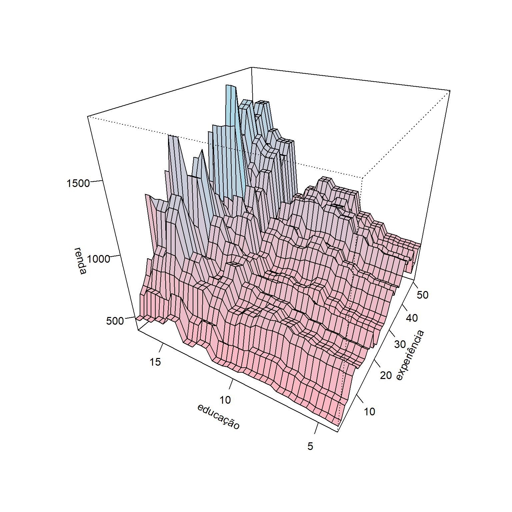

Reforço por gradiente
Máquinas de reforço por gradiente
As máquinas de reforço por gradiente (gradient boosting machines - GBM) foram propostas por Gerome Friedman e consistem em um método de aprendizado por reforço que visa aproximar o gradiente da função perda, ou de forma mais simples, visa aproximar o erro de previsão e diminuir este a cada iteração do método. O conceito de aprendizado por reforço está relacionado ao fato de o método de certa forma aprender através do erro, uma vez que vai melhorando a previsõ a cada tentativa ou iteração a partir dos valores residuais ou de erro observados. O método foi proposto inicialmente considerando árvores de decisão ou regressão, mas poderia ser utilizado também no caso de regressão por mínimos quadrados.
Um algoritmo GBM simplista do método GBM para regressão é apresentado à seguir:
- Defina \(\hat{f}(\mathbf{x})=0\) e \(\varepsilon_i = y_i\) para todos dados de treino.
- Para \(b=1,...,B\):
- Estime uma árvore, \(\hat{f}_b\), para os dados de treino \((\mathbf{x}_i,\varepsilon_i)\), \(i=1,...,N\);
- Atualize \(\hat{f}(\mathbf{x})\) adicionando a árvore de regressão obtida multiplicada por uma taxa de aprendizagem \(\lambda\), isto é, \(\hat{f}(\mathbf{x}) \leftarrow \hat{f}(\mathbf{x}) + \lambda\hat{f}_b(\mathbf{x})\);
- Atualize os resíduos, isto é \(\varepsilon_i \leftarrow \varepsilon_i - \lambda\hat{f}_b(\mathbf{x}_i)\), \(i=1,...,N\);
- Atualize o modelo “impulsionado” ou “reforçado”: \(\hat{f}(\mathbf{x}) = \sum_{b=1}^B\lambda\hat{f}_b(\mathbf{x})\)
O número de iterações ou árvores consideradas, \(\mathbf{B}\), pode ser definido por validação cruzada. A taxa de aprendizado, \(\lambda\), geralmente é um valor real muito pequeno, por exemplo 0,01 ou 0,001 e define a taxa que o modelo por refroço aprende, isto é, melhora sua previsão. Quanto menor \(\lambda\), maior o número de árvores, \(B\), necessário para uma boa aproximação.
Geralmente \(\hat{f}(\mathbf{x})\) é um modelo de árvore com apenas uma partição e portanto dois nós terminais ou regiões, sendo portanto um aprendiz fraco (weak leaner). Em alguns casos pode ser interessante modelos com árvores com duas partições, o que de certa forma implica em modelos com interação.
Considerando a função perda quadrática comumente usada em problemas de regressão:
\[ \begin{aligned} L = \frac{1}{2}(y - \hat{f}(\mathbf{x}))^2 \end{aligned} \]
A divisão por 2 viabiliza facilitar os cálculos no algoritmo de boosting. Tomando a derivada de \(L\) em relação a \(f\) obtém-se o valor residual ou erro em relação à resposta de interesse, isto é:
\[ \begin{aligned} \frac{\partial L}{\partial f} = y - \hat{f}(\mathbf{x}) = \varepsilon \end{aligned} \]
Portanto, em cada iteração, o algoritmo GBM, ao aproximar uma árvore considerando \(N\) observações das variáveis regressoras, \(\mathbf{x}_i\), em relação à \(N\) valores residuais, \(\varepsilon_i\), \(i=1,...,N\), aproxima o gradiente da função perda que, no caso da função perda quadrática, é o valor residual ou erro, \(\varepsilon\).
Retomando o conjunto de dados Hitters seja um modelo de regressão por GBM considerando duas variáveis, Cruns e RBI. Tomando \(B=2000\) e \(\lambda=0.1\), tem-se o gráfico de superfície do salário previsto em função de tais variáveis regressoras.